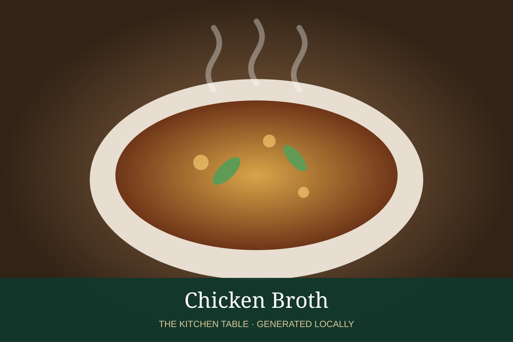

← Back to all recipes
BROTH & STOCK · POULTRY
Chicken Broth
Clean everyday chicken broth for soups, sauces, rice, and braises.
Broth & StockPoultry

Ingredients
- 3 lb chicken wings, backs, or legs
- 1 onion, quartered
- 2 carrots
- 2 celery ribs
- 2 garlic cloves
- 2 bay leaves
- 8 peppercorns
- 3 qt cold water
Preparation
- Combine everything in a stockpot and slowly bring just to a simmer.
- Skim foam; keep at a bare simmer 2–3 hours.
- Strain without pressing the solids.
- Cool rapidly and refrigerate; remove fat if desired.
Related Recipes
Mexican Caldo De Pollo → · Ramen Chicken Broth → · Italian Brodo →
Recipes Using or Pairing with This Broth
Chicken and Andouille Gumbo → · Jambalaya → · Ají de Gallina → · Arroz con Pollo → · Mole Poblano con Pollo → · Tinga de Pollo →